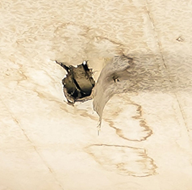
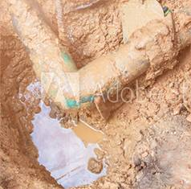
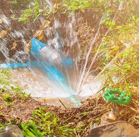
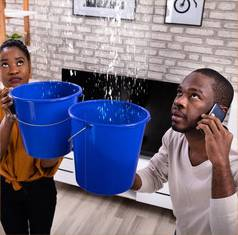

Water Mitigation
Water Mitigation is the process of preventing or reducing the amount of water damage that happens after a wind storm to a roof, water damage to dwelling/contents from firemen caused by a firesomething like, a leaking pipe or e tc.a flooded basement. Water mitigation prevents any additional damage with fast and appropriate actions once we have completed your water damage restoration. This process includes: Assessment, Water Extraction, Cleaning, Sanitizing, Drying, Water Damage Repair, Water Damage Restoration Water mitigation is often required after plumbing failures, floods, or water rushes into homes after a storm. Ceiling water damage, soaked rugs, ruined furniture, and warped flooring begin to occur if a water damage restoration team isn't on site quickly. We take specific steps to reduce property destruction, avoid any potential mold growth, and restore the property to its original value.
 The Damage To Better Than New If you're gracious enough to allow usrs the opportunity to help get your home or business back on track, we'll make sure we do it quickly, efficiently, and with the same care and attention to detail, we would work with our own homes and businesses.
 Our Water Damage Restoration Services After the water mitigation process is complete and further damage prevented, the water damage restoration process begins so we can start rebuilding and restoring your home. The water restoration process includes:
- Water damage assessment
- Water extraction
- Assisting with filing insurance claims
- Cleaning and restoration of possessions such as documents, linens, clothes and books.
- Drying of affected areas such as furniture, walls, padding and carpet.
- Locating and repairing the source of leaking water
- Storm damage repair and reconstruction services
- Remediating mold and mildew damage
 Water Damage Restoration Services Because we realize that it is very important to act quickly in response to emergencies like flooding from plumbing failures, or water backups because of storms, you can rely on us to provide the most efficient water mitigation and restoration services that you can get 24 hours a day and 7 days a week. If you have any questions regarding our water damage restoration services, don't be hesitant and call us now or schedule an appointment.
 What to expect in case of a flood or any other water damage emergency: Within few minutes of your call, we dispatch our professionals to start repair & restoration services. Once our professionals reach the scene, they make use of the latest equipment to start extracting water. Once the water level subsides, we dehumidify your home and use special cleaning agents to prevent mold. As your structure is drying out, we will also be working on your furniture and other belongings at our drying & cleaning facility. Our staff is highly trained to handle even the most delicate items such as oriental rugs. Our restoration specialists provide you the opportunity to relax and take care of other things while we take care of the water damage repair, restoration and clean up.
Things to do when you detect water damage:
- Stay calm. You need to be able to think clearly.
- Close down the water main. If your flood is related to appliances or pipes, shut down all sources of water to reduce damage.
- After that, shut down electrical breakers in the damaged areas. Make sure electricity is off before removing or unplugging any of the electrical equipment from the submerged areas or the wet carpet!
- Call us for water damage restoration.
- Remove fabrics, papers, books, potted plants, shoes and other items capable of staining the wet carpet.
- Mop and blot in order to remove as much water as you can.
- Remove the rugs and anything that is not permanently attached to the floor. Don't try to remove the wall-to-wall carpet.
- The curtains should be lifted from the floor. Loop them through a coat hanger. Place this hanger on the drapery rod.
- Take a cloth and wipe the furniture. Place the wet cushions in a dry place in order to allow even drying. Place an aluminum foil under the legs of the furniture.
- Move paintings, art, and photos to a dry and safe location.
- Open the drawers, cabinet doors, and closets in order to circulate air and enhance the drying.
Things to avoid when you detect water damage:
- Avoid using the home vacuum. There is a risk of electrical shock, and there can be damage to the equipment as well.
- Avoid placing newspapers in the areas where you or other people will walk. The newspaper ink can quickly transfer to the wet fibers of the carpet and this can result in permanent staining.
- Don't - Walk on the carpet except when necessary. This will keep the damage from spreading to the unaffected areas. - Enter any room that has standing water. If you must enter a room with standing water, turn off the electricity to the house. - Lift the tacked-down carpet without professional help. - Use electrical appliances when you have wet floors or carpet. - Remove books from the shelves.
Shop vacuums or the companies that only have carpet drying equipment can't prevent the water from damaging the walls, under molding or baseboards. The water penetrates through the floor coverings into the subfloors, and it eventually causes damage to the rooms located below. If the building's internal moisture isn't controlled, the undamaged objects that are safe from original flood damage can get ruined because it is absorbing moisture from the air. The structures that are not dried fast or adequately enough will serve as food sources for mold. This will later lead to more expensive mold removal services.
Copyright © 2020 - All Rights Reserved - Tennessee Home Defense, Inc.